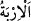
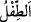

kapsayacak şekilde “ellerinin altında bulunanlar” buyurmuş, bu ifâdeden de
müslüman veya kâfir olsun câriyenin, sâhibi olan kadının ziynetine bakmasının helâl
olduğu anlaşılmıştır. Çünkü kadın, kâfir olan câriyesini istihdam ederken zaruri olarak
bir kısım gizli ziynet yerlerini ona açma ihtiyacını hissedecektir. İşte âyetteki bu ifâde
ile kâfir olan câriye, kâfir olan hür kadından ayrılmıştır.
11 - Erkeklerden, âilenin kadınına şehvet duymayan hizmetçi vb. tâbi kimselere. “
” ihtiyaç demektir. Yâni hizmetçi ve ücretliler gibi âile halkına tâbi olup kadına
ihtiyacı kalmamış, âzâları gevşemiş, kuvvetten düşmüş pek yaşlı erkeklerin evdeki
hanımların gizli ziynetlerini görmelerinde bir sakınca yoktur. Erkeklik organı kesik
(mecbûb) ve iğdiş edilmiş (hasiy) olanlar hakkında ihtilâf edilmiştir. En doğru görüşe
göre iğdiş edilenler, erkeklik organları kesik olanlar ve cinsi münâsebetten âciz olanlar
da kadınların ziynetlerine bakmalarının haramlığı açısından erkekliğinde kusur olmayan
diğer erkekler gibidirler. Çünkü her ne kadar erkeklik âletleri işe yaramasa da hem
bunlar kadınlara, hem de kadınlar bunlara şehvet duyarlar. Yâni onların cinsî münâsebet
arzusu vardır, ancak ona güçleri yoktur.
Bazıları demiştir ki: “Mü’min erkeklere söyle, gözlerini harama dikmesinler”
emri muhkem (mânâsı açık), “erkeklerden, âilenin kadınına şehvet duymayan tâbi
kimseler” buyruğu ise mücmeldir/mânâsı kapalıdır. Muhkemle amel etmek evlâdır. O
halde fitne ihtimâli olmasa bile iğdiş edilmiş ve benzeri zikri geçen kimselerin
kadınların güzelliklerine bakmalarına ruhsat yoktur.
el-Keşşâf”ta der ki: “İğdiş edilmiş kimselerin evlerde tutulması, hizmette
kullanılması, alınıp satılması helâl değildir. Seleften hiç kimsenin onları evlerinde
barındırdıkları nakledilmemiştir.”
en-Nisâb’da der ki: “Bir kitapta okumuştum. Muâviye bir gün kadınların yanına girdi.
Yanında iğdiş edilmiş ve erkeklik organı kesilmiş bir adam vardı. Kadınlardan biri
bunu hoş karşılamadı. Durumu fark eden Muâviye: “Çekinmene gerek yok, o da kadın
sayılır.” dedi. Bunun üzerine kadın: “Sen onun bu şekilde iğdiş edilip
cezâlandırılmasının Allah’ın haram kıldığı bir şeyi helâl hâle getirdiğini mi
düşünüyorsun?!” diye cevap verdi. Muâviye kadının aklına ve anlayışına hayret etti.”
el-Bostân’da der ki: “Âdemoğullarını iğdiş etmek câiz değildir. Çünkü bunda bir
fayda yoktur. Erkekliği tam olanlara olduğu gibi iğdiş edilenlere de kadınların bakması
haramdır. Hayvanların iğdiş edilmesi ise câizdir. Meselâ iğdiş edilmiş koçun eti daha
güzel ve yağı daha çoktur. Diğerlerini de buna kıyas et.”
12 - Henüz kadınların gizli kadınlık husûsiyetlerinin farkında olmayan
çocuklara. Çünkü bu çocuklar henüz neyin ne olduğunu anlayacak seviyede ya da
kadınlara şehvet duyacak güç ve kudrette değillerdir. Temyiz güçleri yoktur ve cinsî
münâsebetten de habersizdirler. Kadınlarla beraber olmaya güç yetiremezler; yâni baliğ
olmamış ve şehveti kavrayacak sınıra/yaşa erişmemişlerdir.
“
” kelimesi, cins isim olup çoğul mânâsında kullanılmıştır. Nitekim “İyi bilin ki